京东 3C × RED!ONAIR
京东与 AI 先锋者对谈
执行 PM · 推进关键节点 · 多方协作
小红书 · 商业化 PM
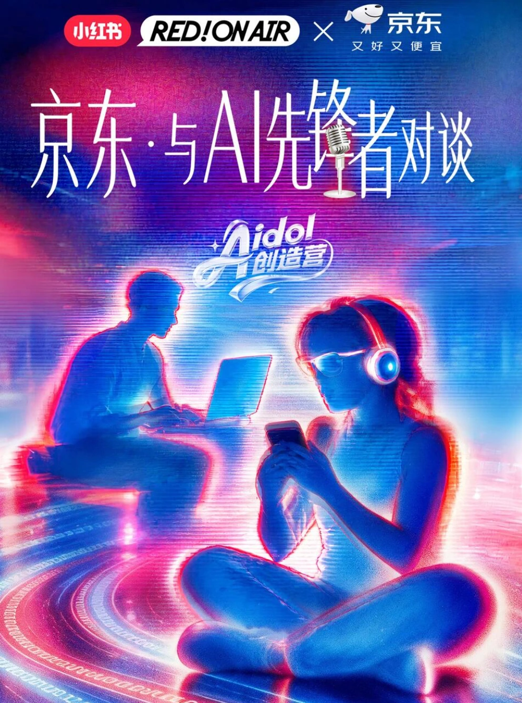
京东 3C × RED!ONAIR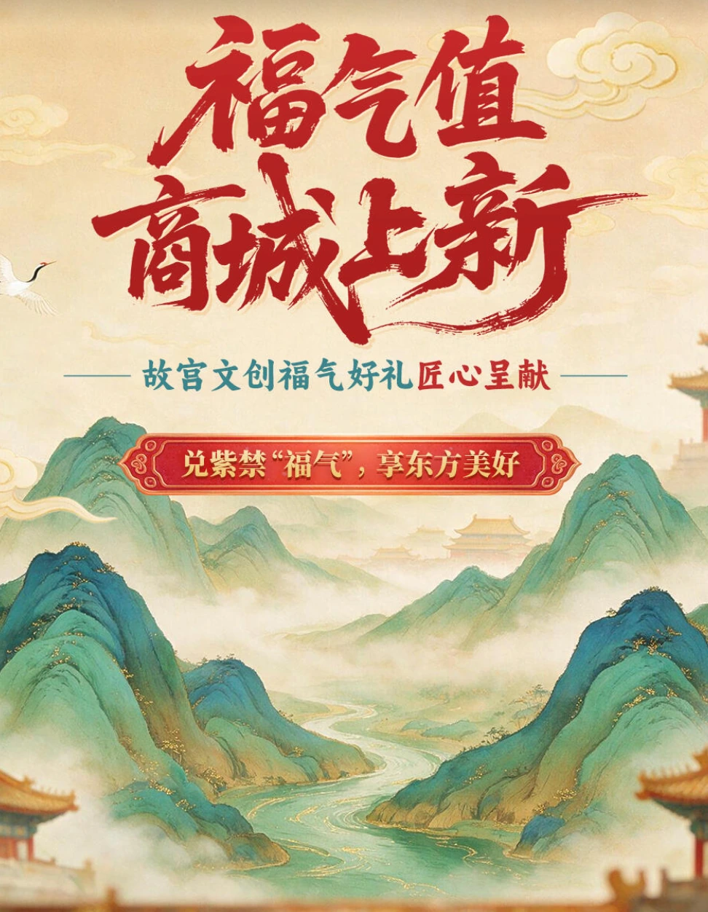
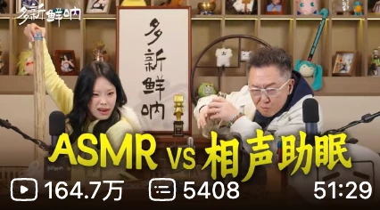
于谦 × 万妮达 × 吕严
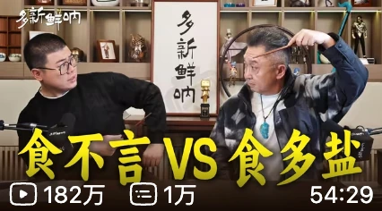
从「食不言」到「食多盐」W+K 上海 · 创意文案
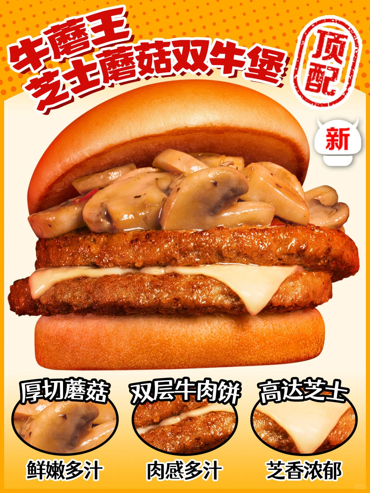
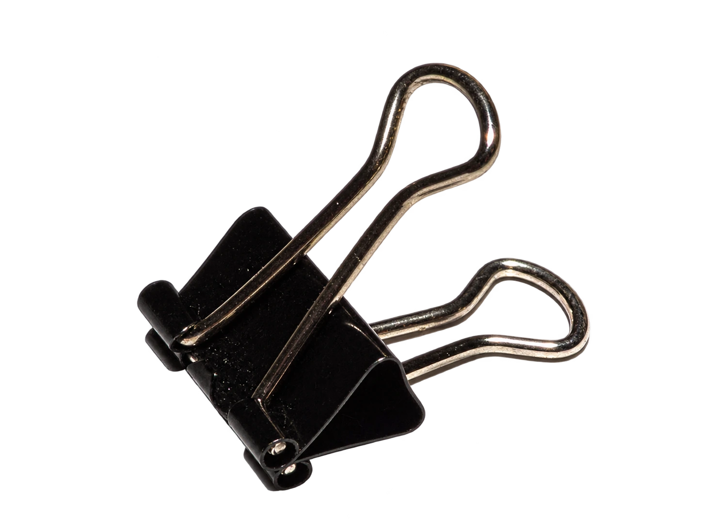
 小红书 商业化 PM 实习生 · 2026.07—至今
小红书 商业化 PM 实习生 · 2026.07—至今
累计落地项目规模
单项目平均曝光
沉淀用户笔记
京东 3C × RED!ONAIR
执行 PM · 推进关键节点 · 多方协作
中行 × 故宫 × 小红书
执行 PM · 品牌合作跟进 · 项目落地
执行主 owner，推进京东 3C × RED!ONAIR、中行故宫 × 小红书等项目；协同多方，跟进关键节点。
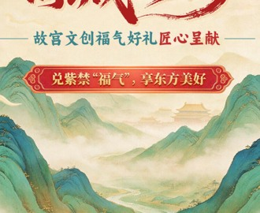
参与数据复盘，调整薄弱环节的应对方案，形成个人 SOP，沉淀新人可复用的项目经验。
RedLand 2.0
京东 101HOME
哩布哩布 × 小红书设计周
跟踪多项目状态，减少重复跟进。
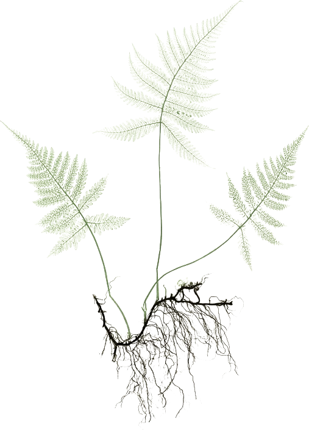
 bilibili 用增市场部 · 2025.12—2026.04
bilibili 用增市场部 · 2025.12—2026.04
于谦 B 站独家视频播客 · 万妮达、吕严两期执行 PM
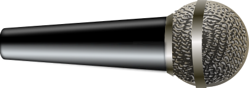
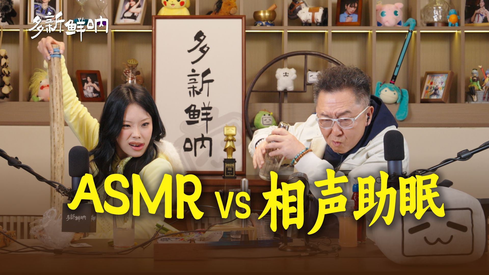
万妮达 × 于谦万妮达期抖音单条宣传切片
吕严期平均观看时长
账号运营期间约涨粉
从用户偏好与热点寻找选题，独立策划、制作万妮达与吕严两期节目，承担执行 PM。
万妮达期以“恶魔低语版哈基米”为传播切口，自然热搜登微博主榜，单条抖音宣传切片百万转赞。
通过预约动态、稳定更新、抽奖与粉丝福利运营于谦账号；复盘传播表现与平均观看时长。
W+K 上海 · 创意文案 · 2025.07—2025.09
参与 Mcd Weekend、Angus、Nov Value 等项目，结合卖点与社交热点产出多套创意提案，整体提案命中率 75%。
社交话题文案、产品命名、TVC 脚本。
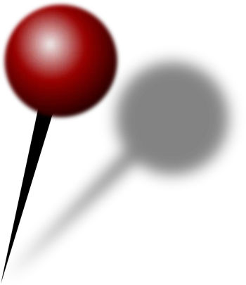
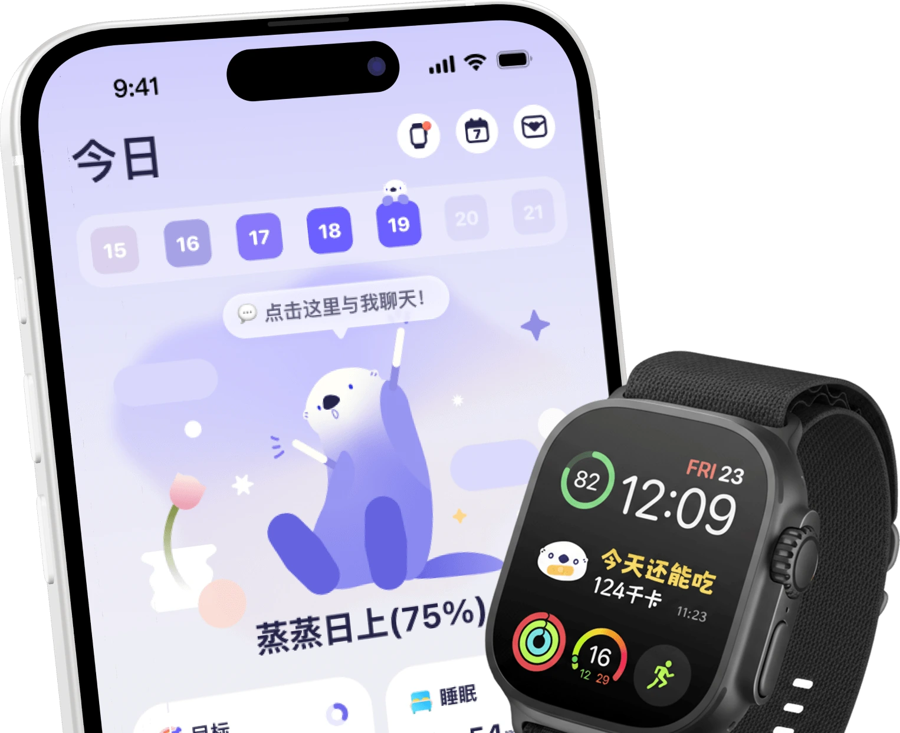
校园内容编辑
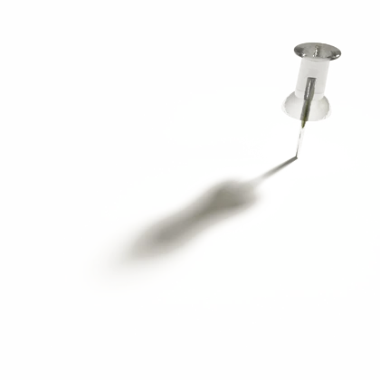
中国矿业大学中文系公众号图文编辑 / 责任编辑，独立完成选题、写作与发布。
2 篇 入选公众号年度阅读量前十创意推文平均阅读 500+，最高 900+；账号日常推文平均阅读约 150。
华东师范大学创意写作硕士在读。2027 届 / 上海
创意写作 · 硕士在读 · 预计 2027.06 毕业
汉语言文学 · 本科
选题策划 · 创意文案 · 社交热点洞察 · 图文编辑
执行 PM · 项目复盘 · SOP 沉淀 · AI 工作流
Office · 秀米 · Photoshop 基础 · 活动 H5 · Vibe coding
大学英语六级 · 普通话二级甲等
付颖 · 上海 · 2027 届
商业化项目管理 / 内容策划 / 创意文案